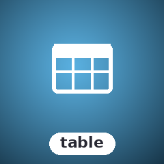

SugarTable
Customizable keyboard-driven data table with sorting, pagination, and a programmatic row cursor

SugarTable is a column-definition data table for terminal UIs. It has sortable and filterable columns, frozen columns, per-cell styling, pagination, a programmatic row cursor, and viewport virtualization. Output is styled with a restricted SGR attribute set that is canonicalized to 24-bit color at render time. The design is inspired by the Go project Evertras/bubble-table.
Install
composer require sugarcraft/sugar-tableRequires PHP 8.3 or newer. Composer pulls in the SugarCraft core, input, style and cell-buffer packages. The table draws nothing by itself. It returns a string from view(), and your program writes it.
Quickstart
use SugarCraft\Table\{Table, Column, Row, RowData, ColumnWidth, WrapMode};
$table = Table::fromColumns([
Column::new('name', 'Name', 20)->withAlignLeft()
->withColumnWidth(ColumnWidth::Dynamic, 0),
Column::new('role', 'Role', 15)->withColumnWidth(ColumnWidth::Percent, 25.0),
Column::new('age', 'Age', 5)->withWrapMode(WrapMode::None),
])
->withRows([
Row::new(RowData::from(['name' => 'Alice', 'role' => 'Admin', 'age' => '30'])),
Row::new(RowData::from(['name' => 'Bob', 'role' => 'Dev', 'age' => '28'])),
])
->withPageSize(25);
echo $table->view();Each column has a key, a title and a width. Rows are Row objects that wrap a RowData map keyed by column key. withPageSize(25) turns on pagination, and the footer shows the page count.
Concepts
A Table is an immutable value. Every with*() call returns a new table, and the table you started from is unchanged. Columns define the layout: their key, title, width mode, alignment, wrap mode and sort type. Rows hold data, and a column is looked up by its key, not its position.
The table is not a TEA Model. It has no update(). Your program owns the state. It calls selectNext(), handleScrollKey(), sortBy() or filter(), stores the returned table, and calls view() when it paints. Every value passes through Sanitize::value() before it reaches the frame.
Filters and search narrow the rows first. Sorting then orders what is left, and pagination takes the slice for the current page. view() renders only that page, and the cursor stays inside it.
Tasks
Sort by a column, numerically when possible. sortBy() compares numbers as numbers when both values are numeric, and compares text case-insensitively otherwise. Calling it again with the same key and direction toggles the order:
$table = $table->sortBy('age'); // ascending
$table = $table->sortBy('age'); // toggled to descendingFilter one column, or search all of them. filter() keeps rows whose value in one column contains the text. search() keeps rows where any scanned column matches:
$table = $table->filter('name', 'a'); // name contains "a"
$table = $table->search('dev'); // any column contains "dev"
$table = $table->clearAllFilters()->clearSearch();Page through a large data set. Set a page size, then move between pages. Navigation clamps to the valid range, and the cursor moves to the new page:
$table = $table->withPageSize(20)->nextPage();
echo $table->pageFooter(), PHP_EOL; // the localized page label, for example "Page 2 of 5"Keep the first column visible while scrolling sideways. Freeze a prefix of columns, then pan the rest with scrollRight():
$table = $table
->withFrozenCols([0]) // freeze column 0 (must be a contiguous prefix)
->withMaxTotalWidth(60) // render a 60-cell window
->scrollRight();Mark rows for a multi-select. Checked rows are tracked by row identity. Turn on the checkbox gutter with withCheckMarks():
$table = $table->withCheckMarks()->toggleChecked(); // check the row under the cursor
$chosen = $table->checkedRows(); // list of Row objectsVirtualize a long list. Render only the rows that fit the screen. The window follows the cursor, so moving the cursor is how you page. withSelectedIndex() and selectNext() scroll the window just far enough to show the selected row:
$table = $table->withViewportHeight(15)->withScrollY(0);
$table = $table->withSelectedIndex(40); // the window scrolls to end on row 40
echo $table->scrollY(), PHP_EOL; // 26What's in the box
StyledCell to a string skips sanitization, so render through view().withFrozenCols() so it stays put during horizontal scroll. withFrozenKeys() takes column keys.selectNext(), selectPrevious() and withSelectedIndex(). handleScrollKey() maps key names to scroll moves. A checked-row set with toggleChecked() gives multi-select. The table has no mouse handling, so wire input events yourself.withViewportHeight() and withScrollY(), and cap the line budget with withMaxLines().ColumnWidth enum: Fixed, Percent, Dynamic, Content and Flex.withBorderless() and withWidth() fit a table inside another box at an exact width, with a continuous reverse-video selection.WrapMode enum: None, WordWrap and Character.withBorder() takes one of the border families from \SugarCraft\Style\Border. markdownBorder() is a visual style only, and its output is not parseable as GFM.withMultilineMode() expands each row to the height of its tallest cell.Accessors
Property reads are bare. Public readonly state, such as $column->style, $row->data and $cell->value, is read directly. Derived values are bare methods, such as columns(), currentRow() and scrollY(). The library ships no get*() accessors. RowData keeps its keyed map lookup with get(), has() and all().
Security & untrusted content
Every cell value, column title and expanded-detail line passes through Sanitize::value() before reaching the buffer: C0/DEL bytes become ·, C1 is replaced, invalid UTF-8 repairs to U+FFFD (raw ANSI in a value paints as visible junk, never honored), sugar-mouse zone sentinels U+E000/U+E001 are stripped so forged click targets cannot ride untrusted data, and bidi overrides / zero-width space render as visible <U+XXXX> markers. Style channels are parse-restricted (SGR strings are parsed into a structured attribute set, canonicalised to 24-bit at render). Casting a StyledCell to string is the one deliberate bypass — it emits its raw value unsanitized; render untrusted content only through view(). See docs/TRUST-BOUNDARY.md.
Accessibility
Selection is pure reverse video (ESC[0;7m) — color-independent — and zebra striping is a fixed black-on-white inversion; both stay readable on any palette, and withSelectable(false) drops the highlight entirely. The empty-state message is translatable. There is no NO_COLOR, non-TTY or plain-text degrade path (SGR is always emitted); for assistive tech prefer Border::ascii() or Border::hidden() with withHeaderStyle(''), since box glyphs and the default TrueColor header add noise and light-theme contrast risk, and no semantic header/column association exists beyond visual alignment.
Configuration and options
The table has no configuration file and no environment variables. Its options are builder calls. Each one returns a new table. The defaults below are the values a new Table::fromColumns() starts with.
| Option | Type | Default | Effect |
|---|---|---|---|
withPageSize() | int | 0 | Rows per page. 0 turns pagination off. |
withShowHeader() / withShowFooter() | bool | true / true | Show the header row and the footer row. |
withFooterType() | FooterType | Page | Footer content: Page, Rows or Both. The footer appears only when pagination is on. |
withPaginationWrap() | bool | false | Cycle the cursor and the pages at the ends. |
withViewportHeight() | int | 0 | Rows rendered at once. 0 renders every row. |
withMaxLines() | int | 0 | Line budget for the data region. See maxLines() and renderedLineCount(). |
withSelectable() | bool | true | Show the selection highlight. false drops it. |
withZebra() | bool | false | Alternate the row stripe. Suppressed under the cursor row. |
withZebraStyleEven() / withZebraStyleOdd() | SGR string | '30;47' / '' | Stripe for even and odd rows. |
withHeaderStyle() | SGR string | '1;37' | Header row style. Pass '' for a plain header. |
withMissingIndicator() | string | '--' | Shown for a cell whose row has no entry for its column. |
withStrictPercent() | bool | false | Throw instead of normalizing percent column sets that total more than 100. |
withRowSeparator() | bool | false | Draw a rule between rows. |
withMultilineMode() | bool | off until set | Expand rows to their tallest cell. |
Keys and controls
handleScrollKey() accepts a key name or a KeyEvent. It maps the spellings below to scroll moves, and handleKey() is an older alias. The window follows the cursor, so a scroll key never moves the window past the selected row. The offset is clamped to maxScrollY(), then pulled back toward the selected row. To travel the whole list, move the cursor instead. The table does not listen for keys itself. Your program reads the key, then passes it in.
| Key name | Action |
|---|---|
arrowUp or ArrowUp | Scroll up one row, as far as the selected row allows. |
arrowDown or ArrowDown | Scroll down one row, as far as the selected row allows. |
pageUp or pageup | Scroll up one page of rows, as far as the selected row allows. |
pageDown or pagedown | Scroll down one page of rows, as far as the selected row allows. |
home | Move the window toward the first row. It stops at the selected row. |
end | Move the window toward the last row. It stops at the selected row. |
Use selectNext() and selectPrevious() to move the row cursor in code. The window follows the cursor. scrollYForKey() returns the offset a key would produce, without changing the table.
Theme and styling
Styles are SGR parameter strings. They are parsed into a structured attribute set and canonicalized to 24-bit color at render time. withBaseStyle() styles every cell. withHeaderStyle() and withBorderStyle() style the header and the border. Column::withStyle() and Row::withStyle() style one column or one row. A cell-level callback is set with withStyleFunc(). It receives the row, the column and the value, and returns a style or an SGR string. The callback output is not sanitized, so return only trusted styles. Zebra striping uses withZebra(), withZebraStyleEven() and withZebraStyleOdd(). Border families come from withBorder(), and the checkbox marks come from withCheckMarks().
Examples
examples/basic.php: sort by score, filter the name column, and paginate.examples/features.php: a wide host-telemetry table with pagination and a frozen first column.
php examples/basic.php
php examples/features.phpBoth scripts print one frame and exit. They work without a terminal, so you can capture their output.
Testing
composer install
vendor/bin/phpunitThe suite runs with PHPUnit 10. GoldenRenderTest compares full frames against files in tests/fixtures/, and TableTest covers the table's core behavior. Focused files pin the features one at a time, including TableFrozenColsTest, TableCheckedRowsTest, TableExpansionTest, TableGlobalSearchTest, TableSanitizeTest, TableLineBudgetTest and TableMultilineCjkTest. LangCoverageTest checks that every key passed to Lang::t() exists in lang/en.php.
Troubleshooting and FAQ
- Sorting or filtering has no effect on the output. Those methods return a new table. Store the result, then call
view()on it. Once any column is marked withwithFilterable(), only marked columns take a filter, so mark the column you want to filter. - A percent-width column is larger than expected. Percent sets that total more than 100 are normalized by default. Turn on
withStrictPercent()to throw instead. withFrozenCols()throws. Frozen columns must be a contiguous prefix that starts at column 0, such as[0, 1]. A set like[0, 2]is refused.- Text from a user shows up as
·or<U+XXXX>. That is the sanitizer working. Control bytes, bidi overrides and zero-width characters become visible markers. Clean the data before you add it, if you want plain text. - Output has escape codes when piped. The table always emits SGR. There is no
NO_COLORor non-TTY fallback. UsewithBaseStyle(''),withHeaderStyle('')andwithZebra(false)for plainer output. - A cell that looks styled is printed raw. Casting a
StyledCellto a string bypasses sanitization. Render the whole table throughview()instead.
Upstream mapping
| Upstream idea (Evertras/bubble-table) | SugarTable class | Notes |
|---|---|---|
| Table with columns and rows | Table, Column, Row | Native PHP. The API is shaped for PHP, not a line-for-line port. |
| Row data keyed by column | RowData | A keyed map with immutable with(). |
| Pagination and cursor | Table::selectNext(), nextPage() | Native PHP. The cursor follows the page. |
| Per-cell styling | StyledCell, withStyleFunc() | Limited to a restricted SGR set, with sanitization applied. |
The deliberate differences from upstream are listed in the library README under Divergences from Upstream.
Architecture
Layout is pure. computeColumnWidths() turns the column width modes into cell counts for a given table width. view() then renders the header, the page of rows and the footer through a RenderCanvas. CellLineMemo caches the rendered lines of a cell, so a table that repaints the same rows does less work. Every value is sanitized at the point it enters, and the frame is built from sanitized text only.
Changelog and versioning
The package has no separate changelog file. The history of sugar-table/ is the commit log in the monorepo. The README has two sections that explain the choices behind the API. The Naming section covers the camelCase house API. The Divergences from Upstream section lists the deliberate differences from the Go project. The package is published as sugarcraft/sugar-table on Packagist and follows the monorepo release flow.
API
| Call | Signature | Description |
|---|---|---|
| Table::fromColumns() | static fromColumns(array $columns): self | Create a table from its column definitions. |
| Table::withColumns() | withColumns(array $columns): self | Replace the column definitions. |
| Table::withRows() | withRows(array $rows): self | Replace the rows. Each element is a Row or a plain array. |
| Table::addRow() | addRow(Row $row): self | Append one row. |
| Table::addRows() | addRows(array $rows): self | Append a batch of rows. |
| Table::sortBy() | sortBy(string $colKey, bool $ascending = true, bool $primary = true): self | Sort by a column. Repeating the sole active sort with the same direction toggles it. |
| Table::clearSort() | clearSort(): self | Remove all sorting. |
| Table::filter() | filter(string $colKey, string $text): self | Keep rows whose value in one column contains the text. |
| Table::clearFilter() | clearFilter(string $colKey): self | Remove the filter on one column. |
| Table::clearAllFilters() | clearAllFilters(): self | Remove every column filter. |
| Table::search() | search(string $text): self | Keep rows where any scanned column contains the text. |
| Table::clearSearch() | clearSearch(): self | Remove the search. |
| Table::withFilterFunc() | withFilterFunc(?callable $fn): self | Set a custom row predicate for the search. |
| Table::withPageSize() | withPageSize(int $n): self | Rows per page. 0 turns pagination off. |
| Table::withPage() | withPage(int $n): self | Jump to a page, counting from 0. |
| Table::selectPage() | selectPage(int $page): self | Move to a page, clamped to the valid range. |
| Table::nextPage() | nextPage(): self | Move to the next page. |
| Table::previousPage() | previousPage(): self | Move to the previous page. |
| Table::selectNext() | selectNext(): self | Move the row cursor down. The window follows the cursor. |
| Table::selectPrevious() | selectPrevious(): self | Move the row cursor up. |
| Table::withSelectedIndex() | withSelectedIndex(int $index): self | Set the row cursor directly. |
| Table::selectedRow() | selectedRow(): ?Row | The row under the cursor, or null. |
| Table::currentRow() | currentRow(): ?Row | The current row. Use it with currentRowData() to read the data. |
| Table::withViewportHeight() | withViewportHeight(int $height): self | Render only this many rows at once. |
| Table::withScrollY() | withScrollY(int $offset): self | Set the vertical scroll offset, in rows. |
| Table::scrollY() | scrollY(): int | The current vertical scroll offset. |
| Table::maxScrollY() | maxScrollY(): int | The highest valid scroll offset for the current page and viewport. |
| Table::handleScrollKey() | handleScrollKey(string|KeyEvent $key): self | Apply a key name as a scroll move. handleKey() is the older alias. |
| Table::scrollYForKey() | scrollYForKey(string|KeyEvent $key): int | The offset a key would produce, without changing the table. |
| Table::withFrozenCols() | withFrozenCols(array $indices): self | Pin a contiguous prefix of columns. Any other set throws. |
| Table::withFrozenKeys() | withFrozenKeys(array $keys): self | Pin columns by key. |
| Table::withHiddenCols() | withHiddenCols(array $indices): self | Hide columns. They must stay out of the frozen prefix. |
| Table::withHiddenKeys() | withHiddenKeys(array $keys): self | Hide columns by key. |
| Table::withScrollX() | withScrollX(int $offset): self | Set the horizontal pan offset of the scrollable columns. |
| Table::scrollLeft() | scrollLeft(): self | Pan one step to the left. |
| Table::scrollRight() | scrollRight(): self | Pan one step to the right. |
| Table::withMaxTotalWidth() | withMaxTotalWidth(int $cells): self | Limit the rendered width. Combine it with overflow arrows and pan helpers. |
| Table::withOverflowArrows() | withOverflowArrows(bool $v = true): self | Mark the edges that have more columns. |
| Table::toggleChecked() | toggleChecked(?int $viewIndex = null): self | Check or uncheck a row, by default the one under the cursor. |
| Table::withRowChecked() | withRowChecked(Row $row, bool $checked = true): self | Set the checked state of a row. |
| Table::checkedRows() | checkedRows(): array | The checked rows. |
| Table::withCheckMarks() | withCheckMarks(string $unchecked = '[ ]', string $checked = '[x]'): self | Show a checkbox gutter with these marks. |
| Table::toggleExpanded() | toggleExpanded(int $rowIndex): self | Show or hide the detail lines of a row. |
| Table::isExpanded() | isExpanded(int $rowIndex): bool | Whether a row is expanded. |
| Table::withBaseStyle() | withBaseStyle(string $ansiStyle): self | SGR style for every cell. |
| Table::withHeaderStyle() | withHeaderStyle(string $s): self | SGR style for the header row. |
| Table::withBorder() | withBorder(Border $border): self | Set the border family. |
| Table::withBorderStyle() | withBorderStyle(string $ansiStyle): self | SGR style for the border. |
| Table::withBorderless() | withBorderless(bool $v = true): self | Draw no border. Use this inside another box. |
| Table::withWidth() | withWidth(int $cols): self | Fix the table width in cells. |
| Table::withStyleFunc() | withStyleFunc(?callable $fn): self | Per-cell style callback, which receives the row, column and value. |
| Table::withMissingIndicator() | withMissingIndicator(string|StyledCell $s): self | Placeholder for a cell with no entry. |
| Table::withStaticFooter() | withStaticFooter(string $text): self | A fixed footer text. |
| Table::pageFooter() | pageFooter(): string | The page footer text, such as "Page 2 of 5". |
| Table::rowsFooter() | rowsFooter(): string | The row-count footer text. |
| Table::computeColumnWidths() | computeColumnWidths(int $tableWidth): array | Compute the actual column widths for a table width. |
| Table::view() | view(): string | Render the table. Every value passes through Sanitize::value(). |
| Column::new() | static new(string $key, string $title, int $width): self | Create a column. |
| Column::withColumnWidth() | withColumnWidth(ColumnWidth $columnWidth, float $percentValue = 0.0): self | Set the width mode and its value. |
| Column::withAlignLeft() | withAlignLeft(bool $v = true): self | Left-align the column. The default is right. |
| Column::withWrapMode() | withWrapMode(WrapMode $wrapMode): self | Set the wrap mode: None, WordWrap or Character. |
| Column::withSortType() | withSortType(SortType $type): self | Set the sort mode: Auto, Text or Natural. |
| Column::withSortFunc() | withSortFunc(?callable $fn): self | Set a comparator over the raw values. |
| Column::withFormatString() | withFormatString(string $format): self | Set a sprintf-style display template. |
| Column::withFilterable() | withFilterable(bool $v = true): self | Mark the column as filterable. |
| Column::withStyle() | withStyle(string $ansiStyle): self | SGR style for the column's cells. |
| Row::new() | static new(RowData $data): self | Create a row from a RowData. |
| RowData::from() | static from(array $data): self | Create row data from a key-value array. |
| RowData::get() | get(string $key): mixed | Read one value by key. |
| RowData::has() | has(string $key): bool | Whether the key is present. |
| RowData::with() | with(string $key, mixed $value): self | Return a new row data with one value set. |
| StyledCell::new() | static new(mixed $value, string $ansiStyle = ''): self | A value with its own SGR style. |
| ColumnWidth | enum | Fixed, Percent, Dynamic, Content, Flex. |
| WrapMode | enum | None, WordWrap, Character. |
| SortType | enum | Auto, Text, Natural. |
| FooterType | enum | Page, Rows, Both. The footer renders only when pagination is on. |
Source & demos
- Source on GitHub
- Full README
- Runnable examples
- Originally inspired by Evertras/bubble-table (Go); SugarCraft is developed as a native PHP project.
Demos
VHS-recorded GIFs of every example shipped with the library. Regenerated automatically on every push that touches the source.


Related
- SugarFlexbox: a lighter sortable table, plus the FlexBox layout and sticky Viewport.
- SugarCellbuffer: the cell grid and style model that the table renders into.
- SugarCore: the TEA runtime and the input messages that drive the table in a program.